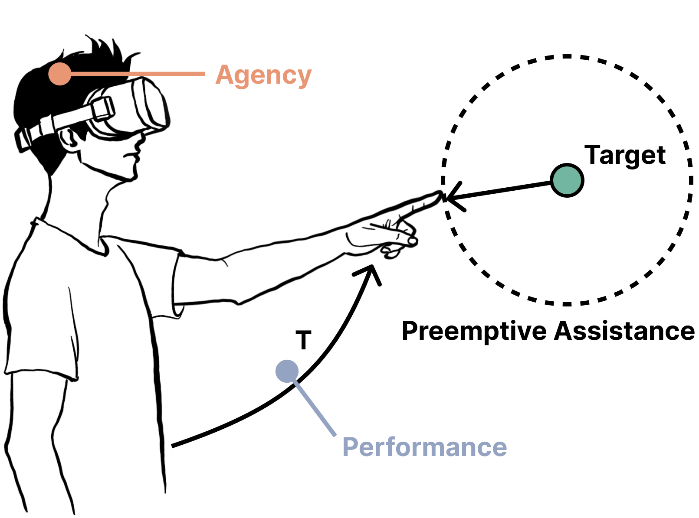
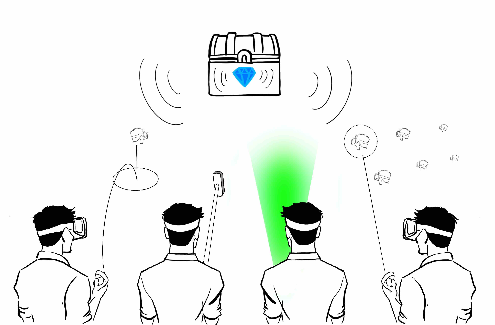
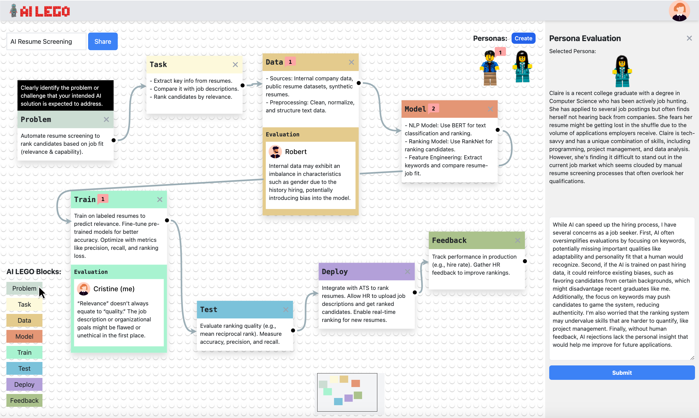
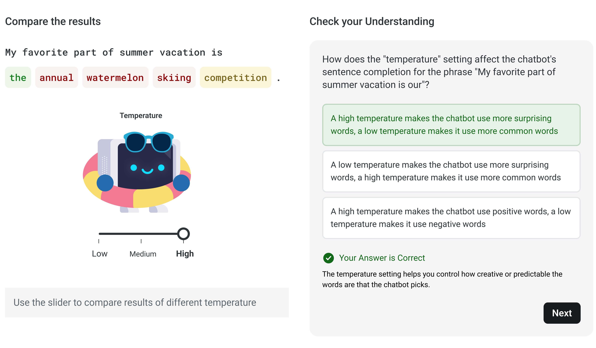
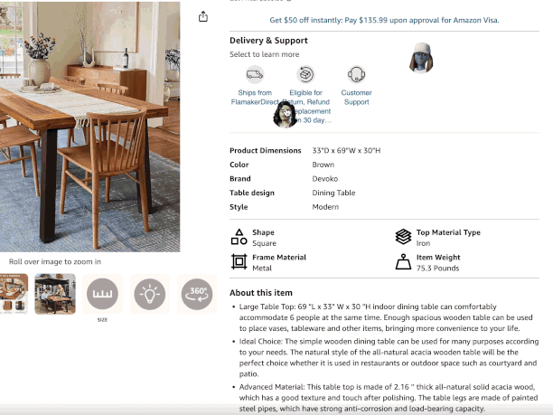
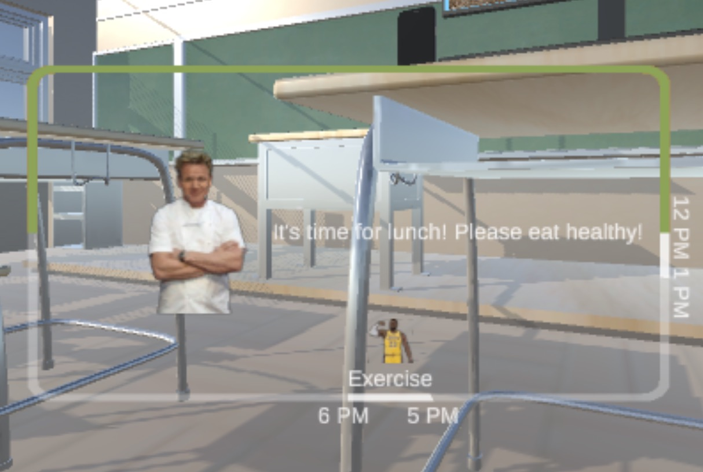
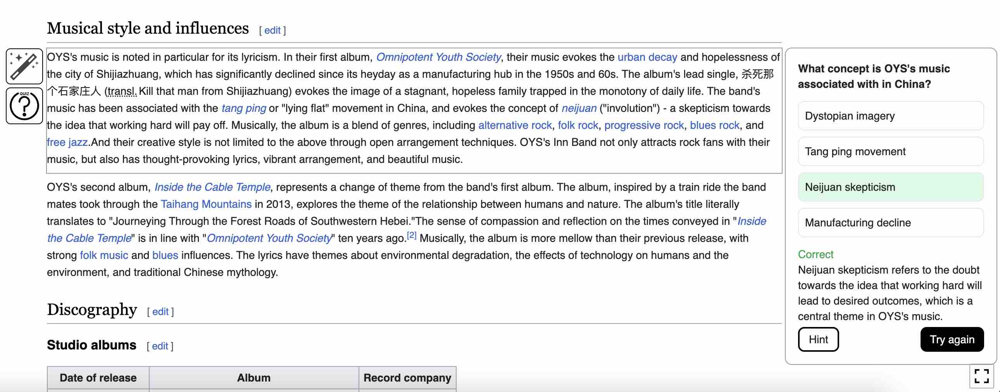
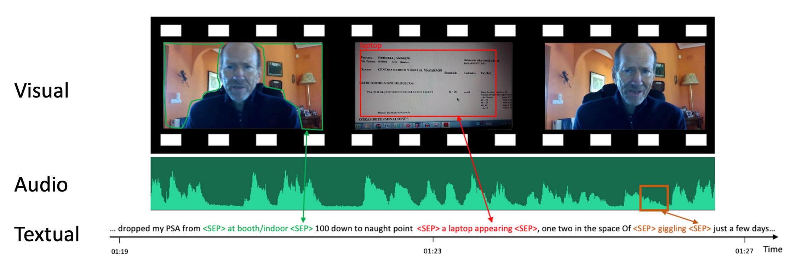

About Me
I am currently a research assistant at the Human-Computer Interaction Institute (HCII) at Carnegie Mellon University.
My research interest lies in Human-Computer Interaction, Extended Reality and Learning Sciences. I am specifically keen on understanding and creating beyond-real interaction techniques & experiences with emergent technologies (e.g., XR, AI) that empower people. Towards this goal, I am working with Prof. David Lindlbauer on spatial computing and Prof. Hong Shen on responsible AI. I was also fortunate to be advised by Prof. Anhong Guo and Prof. Xu Wang in my undergrad, working on the AR intelligent tutor system.
Education
-

Carnegie Mellon University
–
Master of Educational Technology and Applied Learning Sciences
Pittsburgh, PA
-

University of Michigan
–
BSc in Computer Science
Ann Arbor, MI
-

Shanghai Jiao Tong University
–
BSc in Electrical and Computer Engineering
Shanghai, China
Research Projects
PS: Some projects may not be fully visible here. Please reach out if you are interested in more details.

Towards Understanding the Trade-off between Sense of Agency and Performance in Assisted Target Selection in Virtual Reality
Muzhe Wu, Byungjoo Lee, David Lindlbauer
Available Soon

New Ears: An Exploratory Study of Audio Interaction Techniques for Performing Search in a Virtual Reality Environment
Muzhe Wu*, Yi-Fei Cheng*, David Lindlbauer
To Appear at IEEE ISMAR 2024

On "AR-Based Intelligent Tutoring for Physical Task Learning"
Muzhe Wu*, Haocheng Ren*, Gregory Croisdale, Anhong Guo, Xu Wang
Michigan AI Symposium 2022 (Best Demo )
In Submission

On "Early-Stage Risk Identification in Responsible AI"
Muzhe Wu*, Yanzhi Zhao*, Shuyi Han, Michael Xieyang Liu, Hong Shen
In Submission

ActiveAI: The Effectiveness of an Interactive Tutoring System in Developing K-12 AI Literacy
Ying-Jui Tseng, Gautam Yadav, Xinying Hou, Muzhe Wu, Yun-Shuo Chou, Claire Che Chen, Chia-Chia Wu, Shi-Gang Chen, Yi-Jo Lin, Guanze Liao, and Kenneth R. Koedinger
ECTEL 2024
Prototypes


Mini-World

XR Goal Tracker

Wiki-Learn
Other Projects

Why Antiwork: A RoBERTa-Based System for Work-Related Stress Identification and Leading Factor Analysis

Towards Understanding the Relationship between Misinformation and Engagement for Online Medical Videos


FAD: Feature Alignment Discriminator for Text Summarization

Retro Game API for Reinforcement Learning
Jim-Team